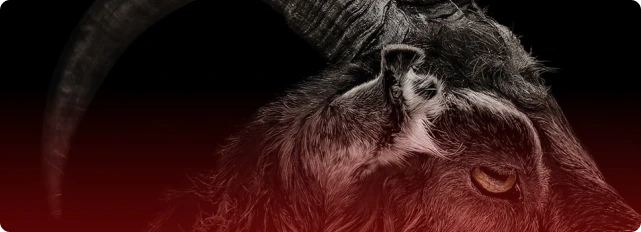

Чёрный Филипп
Культовая фраза дьявола-козла «Wouldst
thou like to live deliciously?» — прямая цитата
из исторических протоколов инквизиции

Векна
Имя и концепция персонажа взяты
из Dungeons & Dragons, где Векна —
божество смерти и секретов
Культовая фраза дьявола-козла «Wouldst
thou like to live deliciously?» — прямая цитата
из исторических протоколов инквизиции
Имя и концепция персонажа взяты
из Dungeons & Dragons, где Векна —
божество смерти и секретов

Персонаж и его семья-каннибалы
были вдохновлены реальным
маньяком Эдом Гейном

Уникальная внешность Дастина обусловлена
редким генетическим заболеванием актёра —
ключично-черепной дисплазией